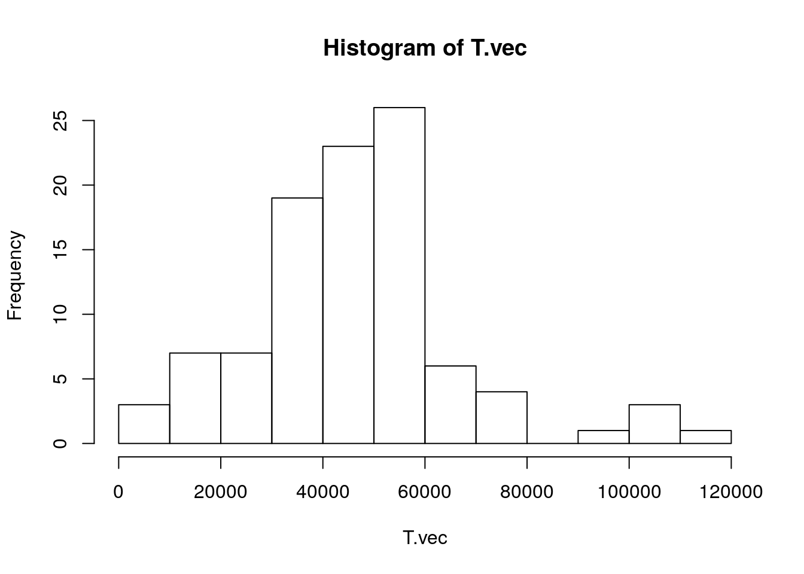
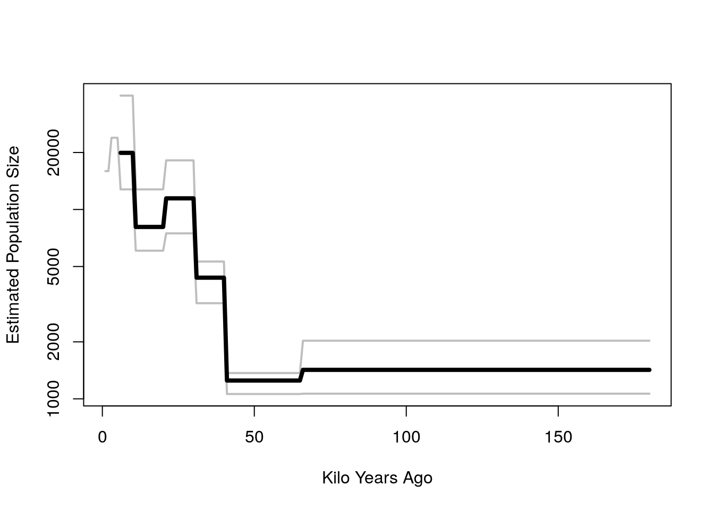

Chapter 10 Coalescent
10.1 Outline
- Big picture: What is “coalescent theory”?
- Time to (T)MRCA
- Simulation: Inferring population size
- An application of Coalescent Theory
10.2 The Coalescent: Expectations of the Past
- Coalescent theory is not a theory.
- It’s a model for the probability of different histories.
- Think about it as a model about how sampling can lead to a history of a common ancestor.
- “The” coalescent is a bit confusing.
- We’re not inferring the actual history of common ancestry, just the probabilities
An actual “picture”

Top panel is a Fisher-Wright instance, ordered so that lines don’t cross.
Haplotype is a sequence (we are diploids, each contributing 2 haplotypes).
- Let’s just think of each line as an individual, for now.
- Such that each column is a different generation and the lines are the links across generations between dots. Each dot in the columns represents a “child” (or a parent to the next generation).
The dark purple dots are 8 sampled individuals. We can find The Most Recent Common Ancestor (TMRCA) of sample. This is the red dot in the middle of the graph.
We can make inferences on the entire population based on the sample of individuals.
- Our sample \(\neq\) even all extant descendants of the MRCA. In other words, the sample is not an exhaustive set of the survivors
- Since some of the descendants of the pink lines don’t survive, then our sample \(\neq\) all of the descendants of the MRCA.
- If we chose two descendants at random, would we always get same MRCA?
When we model coalescence we are thinking backwards in time.
10.3 Our first question: When was MRCA?
- If we sample two individuals (today), how long ago was their MRCA? Note that we are not looking for “who” the MRCA is but rather the number of generations ago that they occurred.
- Our answer will be in terms of the probability of MRCA being 1 generation ago, 2 generations ago, etc.
- We’ll assume Fisher-Wright: constant N, each gen randomly picks parents.
- The answer is surprisingly simple.
Let’s assume we have \(N\) lines in Fisher-Wright (Note: for now we are not using \(2N\).) As a reference, think about the population being the dots from the last column of the diagram from the last section. Then this sample is trying to look backwards \(n\) generations until they find their MRCA.
The chance that two sampled people have same parent is \(1/N\).
- Thus, the probability of coalescence in the first generation is: \(P(T_{MRCA} = 1) = 1/N\). Explicitly, \(T_{MRCA} = 1\) means that the coalescence of lines occurs in the first generation.
- What’s the probability that coalescence occurs in the second generation?
\[P(T_{MRCA} = 2) = \left(1-\frac{1}{N}\right)\frac{1}{N} \]
Here, \(\left(1- \frac{1}{N}\right)\) is the probability of non coalescence in the first generation and the second term \(\frac{1}{N}\) is the probability of coalescence in the \(2^{nd}\) generation. Therefore the probability of coalescence in the second generation is subject to non coalescence in the first generation.
What is \(P(T_{MRCA} = n)\)? Continuing with the logic from the previous answer we have:
\[\begin{aligned} P(T_{MRCA} = 3) &= \left(1-\frac{1}{N}\right)^{2}\frac{1}{N}\\ P(T_{MRCA} = 4) &= \left(1-\frac{1}{N}\right)^{3}\frac{1}{N}\\ \vdots \\ P(T_{MRCA} = n) &= \left(1-\frac{1}{N}\right)^{n-1}\frac{1}{N}\\ \end{aligned}\]
With a reasonably big population and with a long time scale, we can think about the problem in continuous time
- Let the hazard of coalescence be \(c = 1/N\).
- Probability of coalescence at time \(t\): \(\ell(t) h(t) = e^{-ct} c\)
- The expected time of coalescence is analogous to the average age of death which is the life expectancy at birth.
\[\begin{aligned} e_0 &=\frac{T_0}{l_0}\\ & = \frac{\sum_0^{\infty} \ell_x}{1} \\ & = \int_0^{\infty} \ell_x dx \\ & = \int_0^{\infty} e^{-cx}dx \\ & = (\frac{-1}{c})e^{-cx}|_0^{\infty}\\ & = (\frac{-1}{c})(0-1)\\ & = \frac{1}{c} \end{aligned}\]
- Since \(c = 1/N\), then the expected waiting time until coalescence is \(\frac{1}{c}= N\)
- What is expected time of coalescence? Think life expectancy.
- \(E(T_{MRCA})\) if two samples: \(1/c = 1/(1/N) = N\)
- We can look at this through simulations. The functions below create Fisher-Wright processes and get the time to coalescence.
## Our functions
## (1) Fisher-Wright with Mutations "2"
## (builds on function we used last time, but also returns history of draws which we can use to trace TMRCA)
fwm2 <- function(N, n_gen, mu = 0, start_types = paste(1:N))
{
## position vector, for sampling
pos <- 1:N
## matrices to keep book on each generation
## Types
A <- matrix(NA, nrow = n_gen, ncol = N)
## Positions
P <- matrix(NA, nrow = n_gen, ncol = N)
x <- start_types
for (i in 1:n_gen)
{
## this code is a bit different from last time
## note: this is a bit confusing, maybe we should assign A[i+1,] <- x at the end of this loop and
## only go up to n_gen -1
A[i,] <- x ## types of last generation
positions <- sample(pos, size = N, replace = T) ## we sample the parents 1:N
P[i,] <- positions ## keep book on positions
x <- A[i,positions] ## get types of next generation
x <- mut(x, mu) ## mutation
## x
}
return(list(A=A, P=P)) ## A= matrix of types, each line a generation; P= matrix of positions
}
mut <- function(x, mu)
{
## m, the individuals that mutate
m <- which(rbinom(length(x), 1, mu) == 1)
if (length(m) == 0) ## if no-one mutates
return(x)
## add a suffix to their ID, so it will be unique (infinite alleles)
suffix <- 10000*round(runif(length(m)),4)
x[m] <- paste0(x[m], ".", suffix)
x
}
## Time to TMRCA
get.coalescence.time <- function(P, i,j, verbose = F)
{
ending_individuals = c(i,j) ## two individuals we're tracking back in time
parents <- ending_individuals
k_ago = 0
PP = P ## for verbose, tracks coalescence
for (k in nrow(P):1) # row P = generation until 1 (moving backwards in time)
{
k_ago = k_ago + 1
if (verbose == TRUE)
print(parents)
parents <- P[k, parents]
PP[k, parents] <- P[k, parents]*10 + P[k, parents] # way to tag the parents. PP = P when we are not following (backwards) the individuals i, j
if (parents[1] == parents[2]) # Stop looking backwards when both parents are the same
{
if(verbose)
print(parents)
ifelse(verbose,
return(list(PP, k_ago)),
return(k_ago))
}
}
if (k_ago == nrow(P))
k_ago <- NA
ifelse(verbose,
return(list(PP, k_ago)),
return(k_ago))
}- First, consider a FW process with 5 generations and 5 people. The first row of the matrix A is the starting population of people types 1 through 5. The next generations (in each row) are sampled from the previous generation with replacement. If one type is not sampled into the next generation then it is ‘’lost’’ and cannot appear in future generations. ** NOTE FOR JOSH:** I am really confused about the difference between the A and P matrix, so I don’t know if I am writing the correct explanation above and below. Could you please explain more how P and A work in the code below and in the context of the get.time.coalesce fn?
set.seed(10)
out <- fwm2(5,5,0) # N = 5, #generations = 5, mutation =0
P <- out$P
A <- out$A
print(A)## [,1] [,2] [,3] [,4] [,5]
## [1,] "1" "2" "3" "4" "5"
## [2,] "3" "1" "2" "4" "3"
## [3,] "1" "1" "1" "3" "2"
## [4,] "1" "2" "2" "2" "1"
## [5,] "2" "2" "1" "2" "1"## [,1] [,2] [,3] [,4] [,5]
## [1,] 3 1 2 4 3
## [2,] 2 2 2 5 3
## [3,] 2 5 5 5 1
## [4,] 4 2 5 2 5
## [5,] 2 1 2 2 1- Here we look at a function that obtains the time to coalescence given a FW process. The output contains (in order) the parents of the individuals tracked, the position matrix and the time to coalescence. For individuals 1 and 2 \(T_{MRCA}=3\) and for individuals 3 and 4, \(T_{MRCA}=1\)
## [1] 1 2
## [1] 2 1
## [1] 2 4
## [1] 5 5## [[1]]
## [,1] [,2] [,3] [,4] [,5]
## [1,] 3 1 2 4 3
## [2,] 2 2 2 5 3
## [3,] 2 5 5 5 11
## [4,] 4 22 5 22 5
## [5,] 22 11 2 2 1
##
## [[2]]
## [1] 3## [1] 3 4
## [1] 2 2## [[1]]
## [,1] [,2] [,3] [,4] [,5]
## [1,] 3 1 2 4 3
## [2,] 2 2 2 5 3
## [3,] 2 5 5 5 1
## [4,] 4 2 5 2 5
## [5,] 2 11 2 2 1
##
## [[2]]
## [1] 1- Here is an example where there is no coalescence for individuals 3 and 4. In this case, we are looking at 5 types over 2 generations.
## [,1] [,2] [,3] [,4] [,5]
## [1,] 3 1 2 4 3
## [2,] 2 2 2 5 3## [1] 1 2
## [1] 2 2## [[1]]
## [,1] [,2] [,3] [,4] [,5]
## [1,] 3 1 2 4 3
## [2,] 2 22 2 5 3
##
## [[2]]
## [1] 1## [1] 3 4
## [1] 2 5## [[1]]
## [,1] [,2] [,3] [,4] [,5]
## [1,] 33 1 22 4 3
## [2,] 2 22 2 5 33
##
## [[2]]
## [1] NA## [1] 3 3
## [1] 2 2## [[1]]
## [,1] [,2] [,3] [,4] [,5]
## [1,] 3 1 2 4 3
## [2,] 2 22 2 5 3
##
## [[2]]
## [1] 1Now let’s do average of coalescent time in different FW processes. We’ll just draw 1 time for each one. We’ll look at 200 generations of 40 types (no mutations). Over 200 simulations, we find that the average time to coalescence is 52.08 which is close to what our formula \(E(T_{RMCA})=N\) predicts. Try another size of N, ie 20, and you’ll find similar results!
- The variance is 2828.174. If the process was an exponential distribution we would get that the mean \(=\frac{1}{\lambda}\) and that the variance \(=\frac{1}{\lambda^2}\). Here, if \(\lambda=\frac{1}{52.08}\), then then variance should be \(=\frac{1}{52.08^2}= 2712.326\). So, the variance below is a bit off from what we would expect from an exponential distribution.
set.seed(2)
N <- 50 ## pop size
n_trials = 200 ## the number of "histories" we simulate
n_samples = 1 ## the number of samples we do, of each history
T.bar.vec <- rep(NA, n_trials)
for (r in 1:n_trials) { ## for each trial
#print(r)
out<- fwm2(N, n_gen = N*20, mu = 0) ## big enough n_gen so we almost always observe MRCA
P <- out$P
T.vec <- rep(NA, n_samples) ## vector of Coalescent times from samples
for (i in 1:n_samples)
{
ij <- sample(1:N, 2) ## draw random pair of individuals
T.vec[i] = get.coalescence.time(P, ij[1], ij[2])
}
T.bar.vec[r] <- mean(T.vec) ## average coalescent times for this trial
}
mean(T.bar.vec) #Mean time to coalescence## [1] 52.08## [1] 2828.174## [,1] [,2] [,3] [,4] [,5]
## [1,] 3 1 2 4 3
## [2,] 2 2 2 5 3
## [3,] 2 5 5 5 1
## [4,] 4 2 5 2 5
## [5,] 2 1 2 2 110.4 Mutation and inference of TMRCA and \(N\)
- Using mutations, we can infer the most recent common ancestor. How?
- Say mutations occur at a constant rate \(\mu\) (\(10^{-8}\)?). Then in each generation we would expect \(\mu\) mutations, and over \(T\) years we would expect \(T\mu\) mutations. Specifically, since the same mutation cannot happen twice, each year we expect new mutations.
- Say we observe that two people differ at \(k\) sites of the genome. Given this information we can find the TMRCA and even the size of the population.
In the tree graph above, we have that the difference between the parent point (1) and the branches is the number of generations:
The tree length is \(2T\)
- The expected number of mutations is # branches \(\times\) # generations \(\times\) mutations: \[ E(k) = E(2T\mu) = 2\mu E(T) = 2 \mu \bar{T} \]
- \(\bar{T}\) is the average number of generations until we reach the most common recent ancestor and from the previous section we know that: \[ \bar{T} = E(T_{MRCA}) = N \]
- If we observe on average \(\bar{k}\) mutations, then
\[ \begin{aligned} \bar{k} & \approx E(k) = N 2 \mu \\ \hat{N} & = {\bar{k} \over 2 \mu} \end{aligned} \]
- Therefore, an estimate of the population is given by the number of events (\(\bar{k}\)) as a share of the exposure (\(2\mu\)). This allows us to make inferences on how big a population is just by knowing an estimate of mutations and their probabilities.
10.4.1 Inference of population size (Simulation)
- For this simulation, we will do FW with mutations. Then we will average pairwise differences and ivide by \(2\mu\) to get our estimate.
- We can repeat this process multiple times and see if the average estimate converges to the truth.
# Function
count_pairwise_diff <- function(str1, str2, verbose = F)
{
## stategy: split strings at "." and add
## up number of mutations after divergence
if (verbose == TRUE)
{
print(paste0('Item 1: ',str1))
print(paste0('Item 2: ',str2))
}
z1 = unlist(strsplit(str1, "\\."))
z2 = unlist(strsplit(str2, "\\."))
n1 = length(z1)
n2 = length(z2)
n = min(c(n1, n2))
## make sure population has fixed
if(z1[1] != z2[1])
return(NA)
## now get location of prefix (ID of TMRCA) (ie last point before divergence)
pre.n = max(which(z1[1:n] == z2[1:n]))
## get suffix
## these are the mutations after prefix
## code is a bit awkward because for 1 of the
## individuals, there may be no additional mutations
if (pre.n < length(z1))
post.1 <- z1[(pre.n +1): length(z1)]
else
post.1 = NULL
if (pre.n < length(z2))
post.2 <- z2[(pre.n +1): length(z2)]
else
post.2 = NULL
if (verbose == TRUE) {
print(paste0('Mutations of item 1: ', paste(post.1, collapse = "; ")))
print(paste0('Mutations of item 2: ', paste(post.2, collapse = "; ")))
}
## count number of periods, note: length(NULL) is 0
n_mutations = length(post.1) + length(post.2)
return(n_mutations)
}- Let’s see how this function works by starting off with a FW process of 100 types in 2000 generations with a mutation rate \(\mu=0.01\). We save the last generation. Notice that each item in the last generation is a string with ‘.’ which denote a mutation and that the they most of them only differ in the last 4 items between the dots.
set.seed(1)
mu = .01
N = 100
A <- fwm2(N, 2000, mu = mu)$A
x <- A[2000,] # Obtain the last generation
x[1:10]## [1] "74.5520.5563.3239.6558.7128.7639.9055.2605.7108.7876.5694.4778.248.6772.4397.8568.9300.2922.9156.6429.4644.6302.989"
## [2] "74.5520.5563.3239.6558.7128.7639.9055.2605.7108.7876.5694.4778.248.6772.4397.8568.9300.2922.9156.6429.4644.6302.4596.5931.1038.3855"
## [3] "74.5520.5563.3239.6558.7128.7639.9055.2605.7108.7876.5694.4778.248.6772.4397.8568.9300.2922.9156.6429.4644.6302.989"
## [4] "74.5520.5563.3239.6558.7128.7639.9055.2605.7108.7876.5694.4778.248.6772.4397.8568.9300.2922.9156.6429.4644.6302.4596.5931.1038"
## [5] "74.5520.5563.3239.6558.7128.7639.9055.2605.7108.7876.5694.4778.248.6772.4397.8568.9300.2922.9156.6429.4644.6302.989"
## [6] "74.5520.5563.3239.6558.7128.7639.9055.2605.7108.7876.5694.4778.248.6772.4397.8568.9300.2922.9156.6429.4644.6302.4596.5931.1038"
## [7] "74.5520.5563.3239.6558.7128.7639.9055.2605.7108.7876.5694.4778.248.6772.4397.8568.9300.2922.9156.6429.4644.6302.4596.5931.1038"
## [8] "74.5520.5563.3239.6558.7128.7639.9055.2605.7108.7876.5694.4778.248.6772.4397.8568.9300.2922.9156.6429.4644.6302.4596.5931.1038"
## [9] "74.5520.5563.3239.6558.7128.7639.9055.2605.7108.7876.5694.4778.248.6772.4397.8568.9300.2922.9156.6429.4644.6302.989"
## [10] "74.5520.5563.3239.6558.7128.7639.9055.2605.7108.7876.5694.4778.248.6772.4397.8568.9300.2922.9156.6429.4644.6302"- Below we look at the differences between the different types. Function prints out the items, the mutations that occur after the types start diverging and the total number of mutations between each of the types. For types 1 and 4, there are 4 mutations while for types 1 and 10 there is only 1 mutations. Finally, for between types 10 and 13 there are only 3 differences.
## [1] "Item 1: 74.5520.5563.3239.6558.7128.7639.9055.2605.7108.7876.5694.4778.248.6772.4397.8568.9300.2922.9156.6429.4644.6302.989"
## [1] "Item 2: 74.5520.5563.3239.6558.7128.7639.9055.2605.7108.7876.5694.4778.248.6772.4397.8568.9300.2922.9156.6429.4644.6302.4596.5931.1038"
## [1] "Mutations of item 1: 989"
## [1] "Mutations of item 2: 4596; 5931; 1038"## [1] 4## [1] "Item 1: 74.5520.5563.3239.6558.7128.7639.9055.2605.7108.7876.5694.4778.248.6772.4397.8568.9300.2922.9156.6429.4644.6302.989"
## [1] "Item 2: 74.5520.5563.3239.6558.7128.7639.9055.2605.7108.7876.5694.4778.248.6772.4397.8568.9300.2922.9156.6429.4644.6302"
## [1] "Mutations of item 1: 989"
## [1] "Mutations of item 2: "## [1] 1## [1] "Item 1: 74.5520.5563.3239.6558.7128.7639.9055.2605.7108.7876.5694.4778.248.6772.4397.8568.9300.2922.9156.6429.4644.6302"
## [1] "Item 2: 74.5520.5563.3239.6558.7128.7639.9055.2605.7108.7876.5694.4778.248.6772.4397.8568.9300.2922.9156.6429.4644.6302.4596.5931.1038"
## [1] "Mutations of item 1: "
## [1] "Mutations of item 2: 4596; 5931; 1038"## [1] 3## now do get average of all pairwise differences
x <- A[2000,]
Pij <- matrix(NA, length(x), length(x))
for (i in 1:(length(x)-1))
{
for (j in (i+1):length(x))
{
Pij[i,j] = count_pairwise_diff(x[i], x[j]) # if verbose=F, then only prints out the total number of mutations
}
}
k.bar = mean(Pij, na.rm = T) #
## we can now infer pop size
N.hat = k.bar /(2*mu)
print(N.hat)## [1] 112.7778- Now do repeated trials to see if estimator approximates the formula from the previous section: \(\hat{N} = \frac{\bar{k}}{2 \mu}\). With 100 simulations, we get really close to the actual size of the population, which we established at the beginning.
mu = .01
n_trials = 100
N = 100
n_gen = N*5
k.bar.vec = NULL
n_casesfixation = 0
for (r in 1:n_trials)
{
#print(r)
A <- fwm2(N, n_gen, mu = mu)$A
x <- A[n_gen,]
## check on fixation (if we have many of these, increase n_gen)
if (length(unique(substr(x,1,2))) > 1)
#print(x)
n_casesfixation = n_casesfixation + 1
Pij <- matrix(NA, length(x), length(x))
for (i in 1:(length(x)-1))
{
for (j in (i+1):length(x))
{
Pij[i,j] = count_pairwise_diff(x[i], x[j])
}
}
k.bar.vec[r] <- mean(Pij, na.rm = T)
}
print(paste0('# cases of fixation: ',n_casesfixation))## [1] "# cases of fixation: 4"## [1] "Average # mutations: 1.85187558619893"## [1] "Average population size: 92.5937793099466"- Given this simulation framework, we can modify many of the inputs to see how the size of the population reacts. For instance, we can include a large mutation rate or modify the population size.
10.5 Coalescence of a sample of \(n\) individuals
- This is covered on pages 42 and 43 of Gillespie NOTE FOR JOSH: I can’t find this reference. What are you refering to?
- We’ll just do one quick example, accepting the result
- Here is a sample of 3 (Note we’re using \(N\) instead of \(2N\)).
- The intuition here is that when we have more individuals, there’s more chance that some pair of them will coalesce.
- This tree might be the beginning or the end, we really don’t know. So, it is important to keep in mind what we are talking about.
\begin{verbatim}
* _______
/ \
/ \
/ \ T(2) : E(T(2)) = N
/ \
/ * _______
/ / \
/ / \ T(3) : E(T(3)) = N * 2/[3*2] = N / 3
/ / * _______
/ / / \
/ / / \ T(4) : E(T(4)) = N * 2/[4*3] = N / 6
* * * *
...
_______
T(n) : E(T(n)) = N * 2/[n * (n-1)]
\end{verbatim}- If we sample 4, how much of time to TMRCA is do we for 4 branches, 3 branches, and 2 branches?
NOTE FOR JOSH: Could you check this answer here
- The total time waiting until MRCA of all 4 individuals is \(N + {N\over 3} + {N \over 6} = {3\over 2} N\)
- Then, the time spent at each branch relative to the total time (out of 4 branches) is given by the third column.
- We count the total branch length as the number of branches time the expected time to coalesce.
|———————-|————-|————————————————–|——————————| | Number of branches (n) | E(T(n)) | Time spent at each branch /total | Total branch length | |————————|————-|————————————————–|——————————| | 2 | \(N\) | \(\frac{N}{N\frac{3}{2}}=\frac{2}{3}\) | \(2N\) | | 3 |\(\frac{N}{3}\)| \(\frac{N\frac{1}{3}}{N\frac{3}{2}}= \frac{2}{9}\) |\(3\frac{N}{3}=N\) | | 4 |\(\frac{N}{6}\)| \(\frac{N\frac{1}{6}}{N\frac{3}{2}}= \frac{1}{9}\) |\(4\frac{N}{6} = \frac{2}{3}N\) |
10.6 An application of coalescent theory
In this section, we will look at an application to making inferences about the real history of human populations. Caveat: We’re still using \(N\) (not \(2N\)) as the number of haploids
10.6.1 Coalesence when population is changing
- We know that the hazard of coalescence is \(h = c = 1/N\). For instance if the populations were \(N_1 =1000\), \(N_2 = 2000\), then the hazard of coalesence in one generation for each of the populations would be \(h_1= {1\over1000}\) and \(h_2= {1\over2000}\), respectively.
- What if within the same population in one generation we have \(N(t) = 1000\) and in the following generation \(N(t+1)= 2000\)? We still follow FW in allowing children to choose their parents.
- If the population size changes over time \(N(t)\), then hazards of coalescence in will change too: \(h(t) = 1/N(t)\).
Let’s look at a small simulation. We are thinking about a population that has lived over a certain number of years: 5000 people lived during the last 1000 years. Before that, the population was only 500. NOTE FOR JOSH: It’s not so clear to me why T1 is being sampled with N_recent and not with N_ancient. I thought that for the first 1000 years, the time to coalesce should be drawn from rexp(n, rate = 1/N_ancient) and then T2 <- T_thresh + rexp(n2, rate = 1/N_recent). I tried changing in the simulation and I don’t get the nice histogram (nor the intended message), so I assume that my intuition is wrong. Could you clarify the populations involved and when the threshold happens in relation to the population sizes?
N_recent = 5000 ## population last T_thresh years
T_thresh = 1000
N_ancient = 500 ## earlier population
n = 1000 ## sampled individuals
set.seed(0.4886)
T1 <- rexp(n, rate = 1/N_recent) ## random draws from an exponential fn of times to coalesce.
T1[T1 > T_thresh] <- NA ## Remove times that coalesce event happens after first 1000 generations.
n2 <- sum(is.na(T1)) # total years removed.
T2 <- T_thresh + rexp(n2, rate = 1/N_ancient) ## at ancient rate
T.vec <- c(T1, T2)
hist(T.vec, breaks = seq(0, 5000, 250), main="History of times to coalesce", xlab="Years")Figure 10.1: Histogram
- How could we estimate population sizes from this histogram? We need to go from hazard to population size. First, let’s think about the times to coalesce like the age at death of a specific line of types. Therefore, we sort the times to coalesce (equivalent to time of death) to get a survivorship graph and then obtain \(d_x\).
T.vec <- sort(T.vec)
St = (n:1)/n
par(mfrow = c(1,2))
plot(T.vec, St)
abline(v = T_thresh)
plot(T.vec, log(St))
abline(v = T_thresh)Figure 10.2: Population
- How can we estimate hazards from this histogram?
- Say we have \(i\) pairs of haploids
- We then compute how many pairwise differences there are, but instead of computing \(\bar{k}\), we keep the distributional information \(k_i\).
- Each \(k_i\) implies a \(T_i\)
- We then have a set of ``death times’’ (coalescence times), can build a life table, estimate the hazards, and infer \(N(t)\).
- Below we proceed with an example of how to obtain the hazards and the population sizes.
10.7 Reconstruction Ancient European Population Sizes using Batini’s sample of Mitochondrial DNA"
We use real sequences of mitochondrial DNA to estimate ancient population sizes. The sequences were made available by Batini et al. (2017), who analyzed sub-populations in their paper using software for Bayesian inference for comparing groups of individuals. Our approach here is to use a simpler, but less powerful approach. We will simply look at pairwise differences of random pairs of individuals. NOTE FOR JOSH: Is the Batini reference this one? https://www.nature.com/articles/s41598-017-11307-9
- For this we are not going to do subgroups such as the Greeks or Irish, but are going to use the entire European sample. The population sizes we estimate are for the entire population represented by the 328 individuals.
Special thanks to Ken Wachter for this approach and whose R-code forms the basis of this application
10.7.1 Summary of Batini et al.
Before we begin our own analysis, let’s look at the inputs to Batini et al. (2017) analysis – the mtDNA haplotype sequences, and then at the resulting population estimates.
10.7.1.1 The mitochondrial DNA
Data preparation begins.
There are 380 individuals grouped into regional sub-populations. We select out the Greeks, whose labels begin with “gre”.
## [1] 4 3 4 2 5 11 1 15 16577 16577 16577 16577 16577
## [14] 16577 16577 16577 16577 16577 16577 16577 16577 16577 16577 16577 16577 16577
## [27] 16574 16575 16575 16575 16575 16575 16575 16575 16575 16575 16575 16574 16575
## [40] 16574 16574 16574 16574 16574 16574 16574 16575 16575 16575 16575 16575 16575
## [53] 16575 16575 16575 16575 16575 16575 16575 16575 16575 16575 16575 16575 16575
## [66] 16574 16576 16576 16576 16576 16576 16576 16576 16576 16576 16576 16576 16576
## [79] 16576 16576 16575 16575 16575 16578 16578 16575 16575 16575 16576 16577 16577
## [92] 16577 16577 16577 16577 16577 16577 16577 16577 16577 16577 16577 16577 16577
## [105] 16577 16577 16577 16577 16577 16575 16574 16575 16575 16575 16575 16575 16574
## [118] 16574 16574 16574 16575 16575 16575 16575 16575 16576 16576 16576 16575 16575
## [131] 16576 16576 16574 16574 16575 16575 16575 16575 16575 16574 16575 16575 16575
## [144] 16575 16575 16575 16575 16575 16575 16575 16574 16574 16575 16575 16575 16575
## [157] 16575 16575 16574 16575 16575 16575 16575 16575 16575 16575 16575 16575 16574
## [170] 16574 16574 16574 16580 16580 16580 16580 16580 16580 16580 16580 16580 16580
## [183] 16580 16580 16580 16580 16580 16580 16580 16580 16580 16580 16580 16580 16580
## [196] 16580 16580 16580 16580 16580 16580 16580 16580 16580 16580 16580 16580 16580
## [209] 16580 16580 16580 16580 16580 16580 16580 16580 16580 16580 16580 16580 16580
## [222] 16580 16580 16580 16580 16580 16580 16580 16580 16580 16580 16580 16580 16580
## [235] 16580 16580 16580 16580 16580 16580 16580 16580 16580 16580 16580 16580 16580
## [248] 16580 16580 16580 16580 16580 16575 16576 16576 16576 16576 16577 16577 16577
## [261] 16576 16576 16576 16576 16576 16576 16576 16576 16576 16576 16576 16576 16576
## [274] 16576 16576 16576 16576 16576 16576 16576 16576 16577 16577 16577 16577 16577
## [287] 16577 16577 16577 16577 16577 16577 16577 16577 16577 16576 16577 16577 16576
## [300] 16575 16577 16575 16575 16577 16574 16575 16575 16575 16575 16574 16575 16575
## [313] 16575 16575 16575 16575 16575 16574 16575 16574 16574 16574 16574 16574 16575
## [326] 16575 16574 16575 16575 16575 16576 16575 16575 16575 16575 16575 16575 16575
## [339] 16575 16576 16575 16576 16575 16575 16574 16575 16575 16575 16575 16575 16575
## [352] 16575 16575 16575 16575 16574 16575 16574 16574 16574 16574 16574 16574 16574
## [365] 16574 16575 16575 16575 16575 16575 16575 16575 16575 16575 16575 16574 16575
## [378] 16574 16574 16574 16574 16574 16574 16574 16576 16576 16576 16576## note the strings have different length
## because there is some header information
## and then because the labels are mixed with the sequences
## separate out the sequences
xx = x[nchar(x) > 10000] ## elements that contain both label and sequences
xx.list = strsplit(xx, split = ",") ## list of elements, split into label and sequences
## now split up this list into a vector of labels and a vector of sequences
get.first.element = function(x) {x[1]}
get.second.element = function(x) {x[2]}
labels = unlist(lapply(xx.list, get.first.element))
seqs = unlist(lapply(xx.list, get.second.element))
## Now use labels to select out the 20 Greeks
s <- grepl("^gre", labels)
my.labels = labels[s]
my.seqs = seqs[s]
nchar(my.seqs) ## note the sequences all have same number of bases.## [1] 16568 16568 16568 16568 16568 16568 16568 16568 16568 16568 16568 16568 16568
## [14] 16568 16568 16568 16568 16568 16568 16568## now put the bases in a matrix, with each column an indiviual and
## each row a base.
my.list <- strsplit(my.seqs, "")
A <- do.call(cbind, my.list)
dim(A)## [1] 16568 20## coding region sequences, 576-16023 (according to "Tree construction
## and haplogroup prediction" section, but not clear if this was used for
## Intrapopulation diversity
B <- A[576:16023,]
haps <- seqsLet’s inspect just a bit of one of these sequences
## [1] 16568## [1] "GATCACAGGTCTATCACCCTATTAACCACTCACGGGAGCTCTCCATGCATTTGGTATTTTCGTCTGGGGGGTGTGCACGCGATAGCATTGCGAGACGCTG"Let’s put the haps in a matrix
## [,1] [,2] [,3] [,4]
## [1,] "G" "G" "G" "G"
## [2,] "A" "A" "A" "A"
## [3,] "T" "T" "T" "T"
## [4,] "C" "C" "C" "C"
## [5,] "A" "A" "A" "A"
## [6,] "C" "C" "C" "C"
## [7,] "A" "A" "A" "A"
## [8,] "G" "G" "G" "G"
## [9,] "G" "G" "G" "G"
## [10,] "T" "T" "T" "T"Let’s find a site where there’s polymorphism
hap1 = H[,1]
hap2 = H[,2]
s <- min(which(hap1 != hap2))
head(H[s + -2:2, 1:4]) ## the polymorphic site in context## [,1] [,2] [,3] [,4]
## [1,] "T" "T" "T" "T"
## [2,] "A" "A" "A" "A"
## [3,] "A" "G" "G" "G"
## [4,] "G" "G" "G" "G"
## [5,] "A" "A" "A" "A"Let’s see if that’s hap1 is the only “A”
##
## A G
## 19 361We see that there are 19 individuals with this “A” instead of “G”.
Q: How many pairwise differences in total are there between hap1 and hap2?
These are the kind of comparisons we will be doing.
10.7.2 Ancient population estimates
Let’s look at Figure 2 on page 5Figure 10.3: Figure 2 page 5 from Batini et al. (2017)
- If we look at Ireland (IRE), the think lines are effective population estimates over thousands of years (KYA). For instance, according to mtDNA, 1 thousand years ago the effective population size was around \(12,500\), while 50 thousand years ago the population was around \(\approx 1,250\). The order of magnitude for each these populations appears to be about 10^4 in last few KYA and 10^3 50 KYA. Together, perhaps the size is 10 fold. So we’re looking at European effective population sizes on the order of 100,000 the last few thousand years and on the order of 10,000 tens of thousands of years ago.
10.7.2.1 Using the Coalescent to estimate changing population size
Our procedure will involve a four steps:
- Pick 100 pairs of people at random and count their pairwise differences
- Estimate 100 different times of MRCA (\(T\)) using assumed mutation rate
- Estimate \(h(t)\), the time-varying hazard of coalescence
- Estimate the population size $N_e(t)
10.7.2.1.1 Step 1: random sampling and pairwise differences
- First, we sample 100 people with replacement.
set.seed(1)
hap_ids = 1:ncol(H)
hap_id_sample = sample(hap_ids,
size = 200,
replace = FALSE)
hap_id.mat <- matrix(hap_id_sample, 100, 2) # 100 by 2
pairwise_diff_fun <- function(hap1, hap2)
{
h1 <- hap1
h2 <- hap2
## h1 <- unlist(strsplit(hap1, ""))
## h2 <- unlist(strsplit(hap2, ""))
h1[h1 == "N"] <- NA ## note "N" means missing
h2[h2 == "N"] <- NA ## making these NA avoids counting as polymorphism
k = sum(h1 != h2, na.rm = T)
n_valid = sum(!is.na(h1) & !is.na(h2))
return(list(k = k, n_valid = n_valid))
}
pairwise_diff_fun(H[,1], H[,2])## $k
## [1] 45
##
## $n_valid
## [1] 16565- Now we’re ready to do pairwise comparisons of all 100 pairs of haplotypes.
- We’ll define the fraction of locii that have mutated (the pairwise differences) as NOTE FOR JOSH: Not sure what P or C are here. \[ \bar{Y} = P/C \]
P.vec = NULL
C.vec = NULL
for (i in 1:nrow(hap_id.mat))
{
hap_id.1 = hap_id.mat[i,1]
hap_id.2 = hap_id.mat[i,2]
hap1 = H[,hap_id.1]
hap2 = H[,hap_id.2]
out = pairwise_diff_fun(hap1, hap2)
P.vec[i] = out$k
C.vec[i] = out$n_valid
}
Y.bar = P.vec/C.vec
head(P.vec)## [1] 19 36 13 39 5 84## [1] 16566 16484 16539 16565 16565 16544## [1] 0.0011469274 0.0021839359 0.0007860209 0.0023543616 0.0003018412 0.005077369410.7.2.1.2 Step 2: Use mutation rate to obtain 100 distinct TMRCA
- Now we’ll use the mutation rate \(\theta_m\) given by Batini et al. (2017) to compute time back to MRCA.
- First, some background:
- Let \(a\) index sites and write \(Y_a = 1\) if the letters are different, and \(Y_a = 0\) otherwise.
- For 1 site, the probability that it there has been a mutation, is 1 minus the chance that there has been no mutation.
- First, some background:
\[ P( Y_a = 1 ) = 1 - e^{-T\theta} \]
- The mean \(\bar{Y}\) across the segment is the proportion of \(Y_a\) that equal 1. So, in expectation for the fraction of sites that mutate is the same as the probability that 1 site mutates (assuming independence of mutation probabilities by site). This allows us to write:
\[ E{\bar{Y}} = 1 - e^{-2T\theta}, \]
- where we’ve added a “2” in order to account that either one of the pairwise branched could have had a mutation, so we our “exposure” is twice the time to MRCA.
Rearranging we get an estimate \(\hat{T}\) of \(T\) to be \[ \hat{T} = {-\log (1 - \bar{Y} ) \over \theta} \]
Now we’re ready to estimate the MRCAs
theta_m = 2.21 * 10^(-8) ## Batini page 6 (TMRCA estimation)
T.vec <- -(1/2) * (1/theta_m) * log(1 - Y.bar) ## TMRCAs in years ago
head(T.vec, n = 10)## [1] 25963.477 49464.349 17790.271 53328.902 6830.018 115165.228 56610.650
## [8] 12294.775 21863.319 54701.270- Let’s visualize these

- We see a lot of coalescence about 50 KYA, which is as far back as Batini et al. (2017) estimates go. This means the population was small back then.
10.7.2.1.3 Step 3: Obtaining time-varying hazard of coalescence
- We’ll do this in two ways:
- Compute the slope of the logarithm of the survival curve, but we’ll see that it is noisy and needs to be smoothed.
- Construct a “life table” of coalescence with discrete periods of time.
- Let’s start with the more continuous version of estimating slopes.
## Plot survival curve by order of T
St = (100:1)/100 ## or more generally (length(T.vec):1)/length(T.vec)
t = kya = sort(T.vec)/1000
plot(kya, St, type = "l",
xlab = "Kilo Years Ago", ylab = "Fraction of pairs without common ancestor",
main = "")Figure 10.4: Estimatated probability of not coalescing
plot(kya, log(St), type = "l",
xlab = "Kilo Years Ago", ylab = "Log fraction of pairs without common ancestor",
main = "")Figure 10.5: Estimatated probability of not coalescing
- The slope in the first 50,000 years has increased, which implies that the hazard has also increased. This means that the population has increased over time.
10.7.2.1.3.1 Estimating Hazards method 1. From smoothed survival curve
- First, we smooth the survival curve (St)
out = lowess(x = kya, y = St, f = 1/5)
St_smooth = out$y
kya_smooth = out$x
plot(kya, St, cex = .5, ylab="Fraction of pairs without common ancestor",xlab="Kilo Years Ago")
lines(kya_smooth, St_smooth, type = 'l')Figure 10.6: Smoothing
- In this case we tried an f parameter of 1/5 but it can be modified to get a better fit.
- To convert the smoothed survivorship curve into hazards, we use the fact that hazards are equal to minus the slope of log survivorship.
haz_hat = -diff(St_smooth)/diff(kya_smooth)
plot(kya_smooth[-1], haz_hat, type = 'l', ylab = "Estimated Hazard",
xlab = "Kilo Years Ago (Smooth)")Figure 10.7: Hazards
- Unfortunately, this plot does not tell us anything about the uncertainty of our estimates.
10.7.2.1.3.2 Estimating Hazards method 2. Life table appraoch
- Now let’s estimate the hazards using a “life table”, where again “death” is coalescence and “survival” is still not having a common ancestor.
## we choose these time boundaries arbitrarily
x = c(0,2, 5, 10, 20, 30, 40, 65, 180) * 1000 ## time interval boundaries- Define a function to count “exposure” by those pairs that have MRCA in time intervals.
get_nax <- function(Ti, x)
{
## get person years lived in interval by those who die
nax <- NULL
for (i in 1:(length(x)-1))
{
s <- Ti >= x[i] & Ti < x[i+1]
if (length(Ti[s]) != 0) {
nax[i] = mean(Ti[s] - x[i])
}
nax[is.na(nax)] <- 0
}
return(nax)
}- Construct the life table
n <- diff(x)
T.vec.by.cat <- cut(T.vec, x, include.lowest = T, right = F)
ndx = table(T.vec.by.cat)
lx = rev(cumsum(rev(ndx)))
lxpn = c(lx[-1], 0)
nax = get_nax(Ti = T.vec, x = x)
nLx = n*lxpn + nax * ndx ## exposure
nmx = ndx/nLx ## hazard
lt <- cbind(x = x[-length(x)], n, ndx, lx, nax, nLx, nmx)
print(lt)## x n ndx lx nax nLx nmx
## [0,2e+03) 0 2000 0 100 0.000 200000.0 0.000000e+00
## [2e+03,5e+03) 2000 3000 0 100 0.000 300000.0 0.000000e+00
## [5e+03,1e+04) 5000 5000 3 100 3651.934 495955.8 6.048926e-06
## [1e+04,2e+04) 10000 10000 7 97 6416.957 944918.7 7.408045e-06
## [2e+04,3e+04) 20000 10000 7 90 3662.324 855636.3 8.181046e-06
## [3e+04,4e+04) 30000 10000 19 83 6798.251 769166.8 2.470206e-05
## [4e+04,6.5e+04) 40000 25000 54 64 11619.224 877438.1 6.154280e-05
## [6.5e+04,1.8e+05] 65000 115000 10 10 24611.455 246114.6 4.063149e-05- Let’s compare the two estimates:
x.mid = x[-length(x)] + n/2
plot(x.mid, nmx, type = 'o', ylab = "Mortality Rate", xlab = "Age (Midpoint)", col="red")
axis(2)
lines(kya_smooth[-1] * 1000, haz_hat/1000, type = "l", col="blue")
legend("topleft" , legend=c("Lifetable", "Smooth Survival Curve"),
col=c("red", "blue"), lty=1:2, cex=0.8)Figure 10.8: Hazards comparison
- We’re getting basically the same thing, with a little more hint of rising hazards (shrinking pop size) in first 20 kya. Nearly the same thing estimate 40 kya ago, and very little signal before that.
10.7.2.1.4 Step 4: Estimate the population size \(N_e(t)\)
- In order to estimate the population size, we have to think for a minute about units.
- Our hazards are per year, but our logic for why hazards are related to population size is per generation. Remember, the chance of coalescence per generation was \(1/N\). This means we will want to multiply the annual hazard by generation length in order to get hazards per generation unit of time.
- Second, mtDNA is inherited only through mothers. So the coalescent that we are thinking of is only for women. And the effective population size we’re estimating is for females only. We can get a rough estimate of both sexes by doubling the number of females.
- Putting these two considerations together, we have: \[ \hat{N_e(both sexes)} = 2 \times {1 \over 25 \cdot h(t)}, \]
- The 2 inflates to both sexes, and the 25 inflates the annual hazard into generations of 25 years in length.
Ne_smooth = 2 / (haz_hat/1000 * 25)
Ne_lifetable = 2 / (nmx * 25)
## create step function for plotting
Ne_lifetable_step = rep(Ne_lifetable, n/1000)
kya_step = 1:(max(x)/1000)- Plotting the results
plot(kya_smooth[-1], Ne_smooth, type = 'l', ylim = c(1000, 60000), log = 'y',
lty = 2, ylab="Estimated Population Size", xlab = "Kilo Years Ago (Smooth)")
lines(kya_step, Ne_lifetable_step, type = 'l', lwd = 2)- We could evaluate uncertainty using resampling techniques such as bootstrap.
- The estimate above doesn’t include the fact that maybe the mutation rate is not constant or that the sample of people is not representative.
- Also, it’s possible that we are not seeing mutations that are not sampled.
- Migration: maybe the people are not all the same population.
- Let’s loop through and do the whole estimation 40 times
- The estimate above doesn’t include the fact that maybe the mutation rate is not constant or that the sample of people is not representative.
n_trials = 40
Ne.mat <- matrix(NA, nrow = n_trials, ncol = max(x)/1000)
set.seed(1)
for (r in 1:n_trials)
{
#r = 1
#print(r)
## sample
hap_id_sample = sample(hap_ids,
size = 200,
replace = FALSE)
hap_id.mat <- matrix(hap_id_sample, 100, 2)
## estimate MRCA distribution
P.vec = NULL
C.vec = NULL
for (i in 1:nrow(hap_id.mat))
{
hap_id.1 = hap_id.mat[i,1]
hap_id.2 = hap_id.mat[i,2]
hap1 = H[,hap_id.1]
hap2 = H[,hap_id.2]
out = pairwise_diff_fun(hap1, hap2)
P.vec[i] = out$k
C.vec[i] = out$n_valid
}
Y.bar = P.vec/C.vec
T.vec <- -(1/2) * (1/theta_m) * log(1 - Y.bar) ## TMRCAs in years ago
## estimate Ne
T.vec.by.cat <- cut(T.vec, x, include.lowest = T, right = F)
ndx = table(T.vec.by.cat)
lx = rev(cumsum(rev(ndx)))
lxpn = c(lx[-1], 0)
nax = get_nax(Ti = T.vec, x = x)
nLx = n*lxpn + nax * ndx ## exposure
nmx = ndx/nLx ## hazard
Ne_lifetable = 2 / (nmx * 25)
## create step function for plotting
Ne_lifetable_step = rep(Ne_lifetable, n/1000)
kya_step = 1:(max(x)/1000)
## save result
Ne.mat[r,] <- Ne_lifetable_step
}
Ne.interval <- apply(Ne.mat, 2, quantile, c(.1,.5, .9))
matplot(t(Ne.interval), type = 'l', log = 'y', col = "grey", lty = 1, lwd = 2, ylab="Estimated Population Size", xlab="Kilo Years Ago")
lines(Ne.interval["50%",], lwd = 4)
- So it seems fairly clear that effective population size has been growing the last 50 thousand years, from a low of a few thousand to a few tens of thousand.
- The general trend in growth is consistent with Batini but
- Our total population size seems smaller by a factor of about 4 or 5.
- We don’t have the resolution to see increase between 10 and 20 kya, the end of the Last Glacial Maximum or the more recent Bronze Age steppe expansion 2 to 5 kya.
- In order to get more resolution and study sub-group differences, we would want to turn to methods that do more than pair-wise comparisons, giving us more detailed information about the effective population sizes of the past.
- The general trend in growth is consistent with Batini but
References
Batini, Chiara, Pille Hallast, Åshild J Vågene, Daniel Zadik, Heidi A Eriksen, Horolma Pamjav, Antti Sajantila, Jon H Wetton, and Mark A Jobling. 2017. “Population Resequencing of European Mitochondrial Genomes Highlights Sex-Bias in Bronze Age Demographic Expansions.” Scientific Reports 7 (1): 1–8.